Right Triangle Word Problems
1The known data for a right triangle ABC is a = 5 m and B = 41.7°. Solve the triangle.
2 The known data for a right triangle ABC is b = 3 m and B = 54.6°. Solve the triangle.
3 The known data for a right triangle ABC is a = 6 m and b = 4 m. Solve the triangle.
4 The known data for a right triangle ABC is b = 3 m and c = 5 m. Solve the triangle.
5 A tree 50 m tall casts a shadow 60 m long. Find the angle of elevation of the sun at that time.
6 An airship is flying at an altitude of 800 m when it spots a village in the distance with a depression angle of 12°. How far is the village from where the plane is flying over?
7Find the radius of a circle knowing that a chord of 24.6 m has a corresponding arc of 70°.
8 Calculate the area of a triangular field, knowing that two of its sides measure 80 m and 130 m and between them is an angle of 70°.
9Calculate the height of a tree, knowing that from a point on the ground the top of the tree can be seen at an angle of 30º and from 10 m closer the top can be seen at an angle of 60°.
10 The length of the side of a regular octagon is 12 m. Find the radii of the inscribed and circumscribed circles.
11 Calculate the length of the side and the apothem of a regular octagon inscribed in a circle with a radius of 49 centimeters.
12Three towns A, B and C are connected by roads which form a triangle. The distance from A to C is 6 km and from B to C, 9 km. The angle between these roads is 120°. How far are the towns A and B from each other?
1
The known data for a right triangle ABC is a = 5 m and B = 41.7°. Solve the triangle.
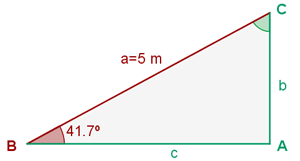
2
The known data for a right triangle ABC is b = 3 m and B = 54.6°. Solve the triangle.
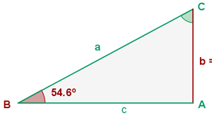
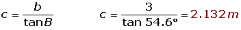
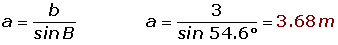
3
The known data for a right triangle ABC is a = 6 m and b = 4 m. Solve the triangle.
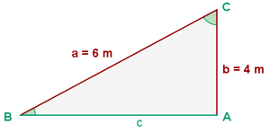
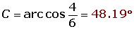

4
The known data for a right triangle ABC is b = 3 m and c = 5 m. Solve the triangle.
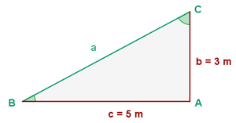
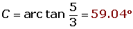
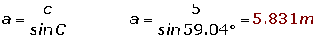
5
A tree 50 m tall casts a shadow 60 m long. Find the angle of elevation of the sun at that time.
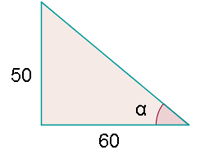
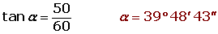
6
An airship is flying at an altitude of 800 m when it spots a village in the distance with a depression angle of 12°. How far is the village from where the plane is flying over?
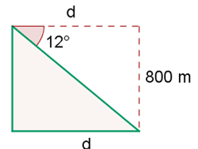
7
Find the radius of a circle knowing that a chord of 24.6 m has a corresponding arc of 70°.
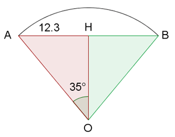
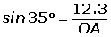
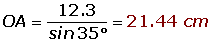
8
Calculate the area of a triangular field, knowing that two of its sides measure 80 m and 130 m and between them is an angle of 70°.
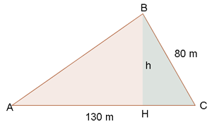
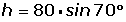
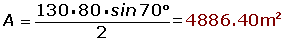
9
Calculate the height of a tree, knowing that from a point on the ground the top of the tree can be seen at an angle of 30º and from 10 m closer the top can be seen at an angle of 60°.
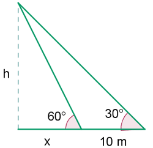
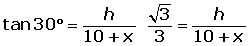
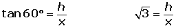

10
The length of the side of a regular octagon is 12 m. Find the radii of the inscribed and circumscribed circles.
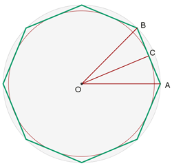
Radius of the inscribed circle.
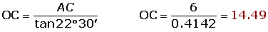
Radius of the circumscribed circle.
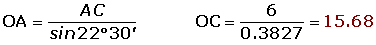
11
Calculate the length of the side and the apothem of a regular octagon inscribed in a circle with a radius of 49 centimeters.
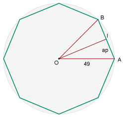
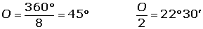
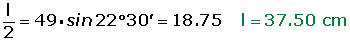

12
Three towns A, B and C are connected by roads which form a triangle. The distance from A to C is 6 km and from B to C, 9 km. The angle between these roads is 120°. How far are the towns A and B from each other?
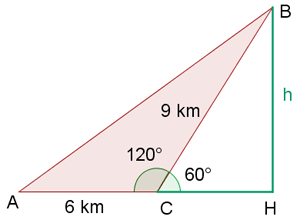